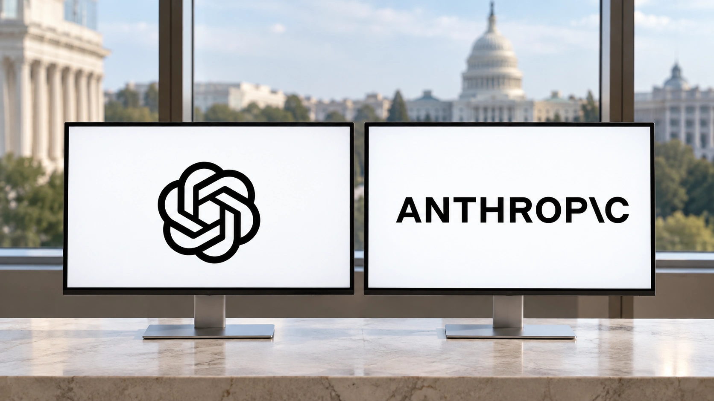

FTC Seeks OpenAI and Anthropic Safety Records as AI Scrutiny Intensifies
Reported document demands bring safety incidents, safeguards and public claims into focus. The inquiry is a step in gathering evidence, not a finding of wrongdoing.
TTN Research Desk ·

The Federal Trade Commission has sought records from OpenAI and Anthropic about safety incidents and consumer protections, according to Reuters’ October 15 account of reporting by Axios. The reported demands cover safeguards, marketing and privacy materials. They mark a concrete evidence-gathering step in the scrutiny of powerful AI systems, without establishing that either developer has violated the law.
A separate Reuters update at 13:49 UTC on Thursday said the administration’s new AI task force was scheduled to meet that day, citing an FTC spokesperson. The planned meeting adds a policy discussion alongside the reported document demands. A scheduled meeting is not evidence that the group has already issued new rules or reached a decision.
The news moves the discussion toward records that could show what a company knew, what it tested and how it described the resulting product. A general commitment to safe AI is different from documentation of how a particular system behaved under a particular set of conditions.
A demand for records is not a verdict
The FTC explains that civil investigative demands are tools for obtaining information during investigations. Its guidance also cautions that receiving one does not necessarily mean the recipient is the target. An investigation and a legal finding are distinct stages. TTN has not reviewed the reported company-specific demands and does not infer their full scope from the news accounts.
That boundary matters because a headline about compulsory documents can be mistaken for a concluded case. The information could support further action, narrow a concern or require more investigation. The public reports do not justify predicting which outcome will follow.
They also do not establish that a broad prohibition on AI products has been imposed. The immediate reported development concerns the collection of evidence. Any subsequent allegation, settlement or court ruling would need to be evaluated on its own terms.
Safety claims need a traceable record
For a product that can take actions, useful evidence would include the permissions it held, the instructions it received, the systems it could reach and the controls applied to its output. These are examples of the questions a technical review should resolve, rather than a claim that each appears in the FTC’s demands.
A failed test in an isolated environment and an unauthorized action affecting an outside service are not interchangeable events. The setting, authorization and actual consequences matter. So does the distinction between what an underlying model can generate and what a deployed agent is allowed to execute.
The same care is needed when assessing a developer’s public description. A safeguard that reduces a measured failure rate does not necessarily eliminate that failure. A test result from one version of a system does not automatically describe every later version or every customer configuration.
Enterprise buyers have their own verification problem
A company considering an AI deployment needs enough information to set its own access controls and respond to mistakes. The relevant question is often whether a proposed workflow can be monitored, interrupted and reconstructed after an unexpected action.
For example, a hypothetical assistant drafting a refund recommendation has a different authority boundary from one that can send the payment. A record of which action was permitted and who approved it makes those workflows distinguishable. This is a deployment consideration, not an account of an incident involving either company.
Procurement teams therefore have a reason to examine safety documentation alongside model performance. That does not require assuming that every autonomous feature is unsuitable. It requires matching the evidence and controls to the authority being granted.
The next significant development will be what becomes publicly established about the inquiry and the companies’ responses. Until then, the reported requests are important because they seek underlying records. They do not substitute for the findings those records may eventually support.
Sources (5)
Related reading: Anthropic’s replication experiments and their limits · Enterprise AI data security.
For informational purposes. This article is not investment advice.